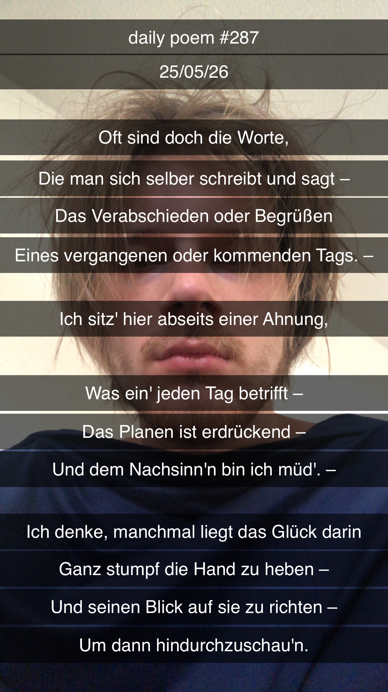

Das Glück des müden Blicks
Oft sind doch die Worte,
Die man sich selber schreibt und sagt,
Das Verabschieden oder Begrüßen
Eines vergangenen oder kommenden Tags –
Ich sitz' hier abseits einer Ahnung,
Was ein' jeden Tag betrifft –
Das Planen ist erdrückend,
Und dem Nachsinn'n bin ich müd' –
Ich denke, manchmal liegt das Glück darin
Ganz stumpf die Hand zu heben –
Und seinen Blick auf sie zu richten –
Um dann hindurchzuschau'n.
